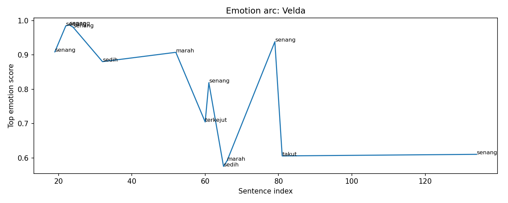
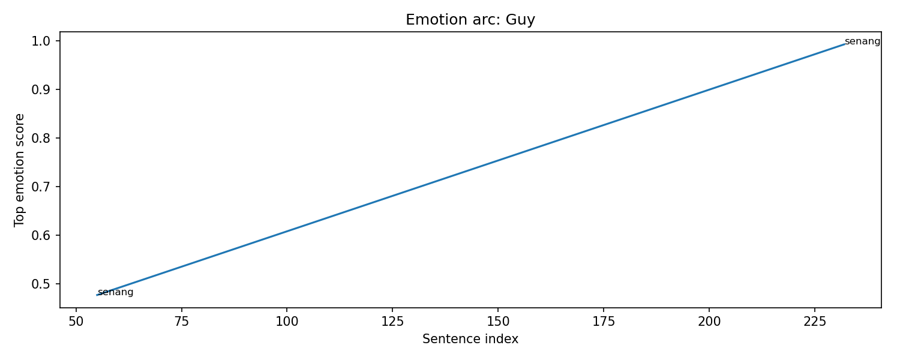
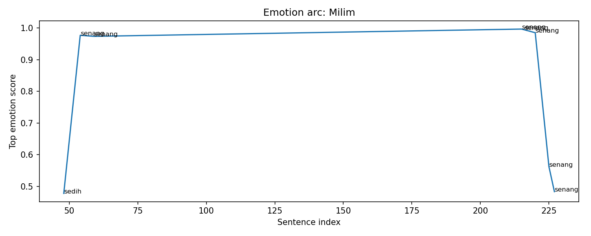
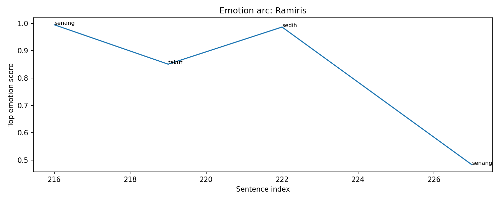
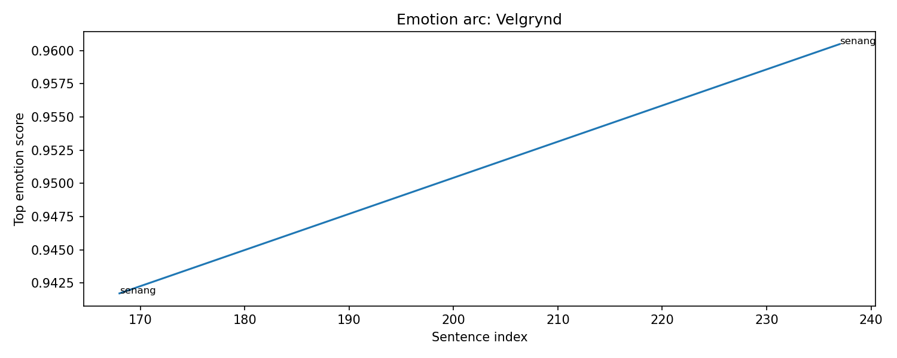
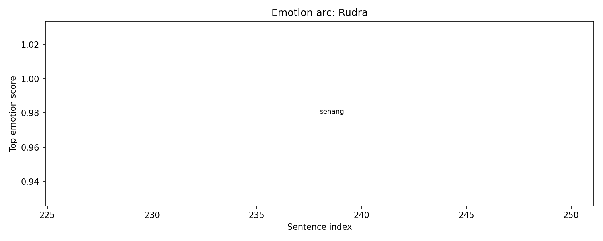
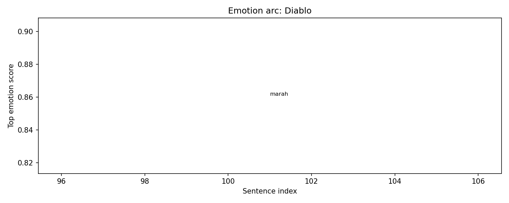
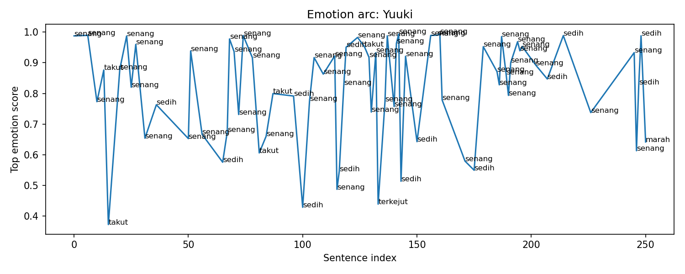

Overall Chapter Summary
A decisive battle unfolds between Rimuru and Yuuki, where strategies and abilities clash as Yuuki seeks power and dominance.
Chapter Drift Analysis
Similarity: 0.4441
Drift: 0.5559
High drift. The chapter may strongly shift tone, theme, mood, or narrative direction.
Bug Severity Distribution
Story Bugs Found
Yuuki's ability to stop time and simultaneously use a powerful spell seems incongruent with previously established rules of magic where simultaneous complex spellcasting is not feasible.
Appears on timeline:
- matched by evidence: ev_001_001 · Yuuki Decides to Use His Full Power in sc_001 · Yuuki's Strategy Against Rimuru at
Unknown
Type: The Contradiction
Definition: A character acts completely out of line with their established personality traits, or previously known facts are suddenly altered to fit a new scene.
The transition of characters like Milim and Ramiris from a state of despair to suddenly gaining determination to fight lacks sufficient buildup, making it feel abrupt.
Appears on timeline:
- chapter-level: No exact event match in Chapter-level issue at
Unknown
Type: Missing Details
Definition: A vital piece of information, a key item, or a character’s injury is forgotten, conveniently disappears, or magically reappears between chapters or scenes.
Character Sheet
Summary of character state, current actions, potential future plot hole risks, and acquired items/spells in this chapter.
Character Arc Analysis
Velda

Emotional Arc Summary
Velda experiences a complex emotional trajectory, beginning with feelings of happiness and ambition regarding his world-making plans, as seen in his intentions to create a new world and defeat Rimuru. However, this is contrasted by moments of sadness and anger associated with his role in managing the Mana Reactor and his limitations against Yuuki.
Action-Based Interpretation
Although Velda is portrayed as confident and strategic in his actions, such as analyzing abilities and planning to counter Rimuru, he remains constrained and frustrated by his inability to use certain skills. His actions reflect an ongoing struggle to exert power while grappling with his dire circumstances.
Key Turning Point
The emotional climax occurs when Velda's anger surfaces upon realizing Yuuki's full control over the Mana Reactor, marking a shift from anticipation to a feeling of betrayal and helplessness.
Narrative Meaning
This layered emotional journey underscores Velda's ambition juxtaposed with the limitations imposed upon him, highlighting his inner conflict as a villain and his strategic calculations.
Potential Writing Issue
Velda's emotional states experience moments of inconsistency, particularly the shift from happiness to sadness and anger without supporting actions, which could confuse readers about his motivations.
Guy

Emotional Arc Summary
In this chapter, Guy's emotions fluctuate between a sense of limited control and a nostalgic happiness. He shows a mix of anticipation and cheerfulness as he reflects on past encounters.
Action-Based Interpretation
Guy does not display any explicit actions or decisions during the decisive battle between Rimuru and Yuuki, which feels somewhat detached. His feeling of 'senang' is connected to recollections rather than present engagement.
Key Turning Point
The mention of nostalgia in the line 'Sudah lama, bukan, Guy?' marks a critical emotional point. It anchors Guy's emotional experience to past battles, indicating a longing for connection despite current events.
Narrative Meaning
Guy’s emotional arc suggests a struggle between his past relationships and his current situation. The lack of active participation in the conflict may symbolize a deeper internal conflict or resignation.
Potential Writing Issue
The disparity between emotional peaks and Guy's inactivity may indicate a narrative inconsistency. Emotional highs are not fully supported by actions, which could weaken character engagement in the story's climax.
Milim

Emotional Arc Summary
Milim experiences a fluctuating emotional journey in this chapter, beginning with a sense of sadness as she inherits the 'Mana Breeder Reactor,' symbolizing her immense power. Her emotions shift through joy upon incorporating the legacy of the sword, reflecting her pride and potential.
Action-Based Interpretation
Despite not taking explicit actions during critical moments, Milim's emotional responses are deeply tied to her realizations. For instance, she sits down and cries, highlighting her vulnerability regarding Rimuru's disappearance, indicating a personal connection and emotional investment in the battle's outcome.
Key Turning Point
The pivotal moment occurs when Milim learns of Rimuru's status, initially leading to despair but quickly transforming into renewed strength. This intense emotional shift coincides with her rising determination to stand again, indicating a resurgence of power linked to her bond with Rimuru.
Narrative Meaning
This chapter illustrates the complexity of Milim's character, blending joy and sorrow intertwined with her identity and connections, showcasing her emotional depth and growth.
Potential Writing Issue
Milim's rapid emotional oscillation, particularly from deep sadness to strength, might appear inconsistent without overt actions driving these shifts, potentially confusing readers regarding her stability.
Ramiris

Emotional Arc Summary
Ramiris experiences a volatile emotional journey through joy, fear, and sadness as the battle unfolds. Initially, she is happy but quickly shifts to anger and fear upon realizing Rimuru's absence, feeling the weight of the situation.
Action-Based Interpretation
In this chapter, Ramiris’s emotions influence her reactions. When she becomes angry after Milim expresses sadness, it demonstrates her protective feelings towards Rimuru. Her fear intensifies when she shouts, indicating a desperate response to the chaos around her.
Key Turning Point
The turning point occurs when Ramiris goes from anger to fear, reflecting her vulnerability during a critical moment. This shift highlights her concern for Rimuru and her role in the battle.
Narrative Meaning
This emotional arc underlines the stakes of the battle and how personal stakes affect individuals involved. Ramiris’s feelings serve to emphasize the implications of Rimuru's situation on their unity.
Potential Writing Issue
There is a potential inconsistency where Ramiris initially exhibits happiness and then quickly transitions to sadness and fear without a clear event tying these emotions together, making her emotional journey feel abrupt.
Velgrynd

Emotional Arc Summary
Velgrynd experiences moments of joy (senang) as the battle unfolds, highlighted by her eagerness to explore the world with another character. These emotional peaks suggest optimism amidst the chaos of battle.
Action-Based Interpretation
Although specific actions by Velgrynd are absent in this chapter, her emotions indicate her readiness to engage and possibly reflect a supportive role in the dynamics between Rimuru and Yuuki. Her emotional highs signal an investment in the outcome of the conflict.
Key Turning Point
The conversation about exploring the world serves as a crucial moment where Velgrynd’s optimism contrasts with the surrounding tension of the battle, implying a deeper connection to the stakes at hand even without direct action.
Narrative Meaning
Velgrynd's emotional state provides depth to the narrative, suggesting that even in conflict, desires for companionship and adventure persist, highlighting themes of hope and camaraderie.
Potential Writing Issue
The lack of concrete actions accompanying significant emotional spikes may lead to inconsistencies in character portrayal, as her feelings do not clearly align with any visible contributions to the conflict.
Rudra

Emotional Arc Summary
Rudra's emotional journey is best captured by the single moment of joy ("senang") expressed through the phrase, “Rudra, bodoh.” This suggests a moment of levity, possibly in the context of a wider conflict.
Action-Based Interpretation
Despite the presence of a decisive battle between Rimuru and Yuuki, Rudra's actions in this chapter are not explicitly mentioned. The lack of concrete actions limits understanding of how his emotions translate into the narrative.
Key Turning Point
The only notable emotional spike occurs at sentence index 238, where Rudra's joyful reaction might serve as a brief respite amid tension, hinting at a rare moment of personal triumph or clarity.
Narrative Meaning
This interplay of emotion without substantial action raises questions about Rudra's role in the battle. His joy might suggest confidence or mockery but lacks context, leaving his character’s agency in doubt.
Potential Writing Issue
The absence of specific actions does not align with the emotional high point, indicating a potential inconsistency. Clarifying Rudra's involvement could enhance his emotional arc and maintain narrative coherence.
Tuan Rimuru

Emotional Arc Summary
Tuan Rimuru experiences a tumultuous emotional arc primarily characterized by moments of joy amidst intense conflict. His confidence spikes as he demonstrates superiority, but underlying tensions occasionally lead to surprise and sadness.
Action-Based Interpretation
Rimuru's composure is repeatedly tested by Yuuki's strategic maneuvers. For instance, Rimuru successfully dodges attacks and analyzes Yuuki's primitive magic, maintaining a sense of triumph despite the stakes. However, as Yuuki manages to seal Rimuru's magic attacks, there are hints of vulnerability.
Key Turning Point
The pivotal moment occurs when Yuuki believes he has gained a tactical advantage by using time freeze magic. This moment creates a duality of Rimuru's high confidence clashing with Yuuki's desperate tactics, leading to an emotional fluctuation.
Narrative Meaning
The contrasting emotions enhance the high-stakes nature of the battle. Rimuru’s emotional stability serves as a counterbalance to Yuuki's escalating desperation, emphasizing the theme of confidence versus anxiety in conflict.
Potential Writing Issue
Some emotional peaks, like Rimuru's surprise, lack direct narrative support, implying inconsistency. Clarifying these emotional reactions could strengthen character development.
Diablo

Emotional Arc Summary
In this chapter, Diablo experiences a surge of anger, indicated by an emotional score of 0.86. His frustration likely arises from external threats and the chaotic nature of the battle unfolding between Rimuru and Yuuki.
Action-Based Interpretation
While specific actions for Diablo are not provided, his emotional response suggests he is either reacting to or strategizing against the ongoing conflict. His anger could signal a pivotal moment where he must decide whether to intervene or further observe the battle.
Key Turning Point
The key turning point for Diablo hinges on his emotional intensity, reflecting a potential shift in how he engages with the battle. The mounting frustration might compel him to alter his approach, either by strengthening his resolve to assist Rimuru or by deciding to exploit the chaos for his own gain.
Narrative Meaning
Diablo's emotional state adds depth to the ongoing battle, emphasizing the stakes involved. It also lays the groundwork for potential conflict within the larger narrative, as his anger could lead to unpredictable decisions.
Potential Writing Issue
The lack of concrete actions from Diablo makes the emotional spike feel somewhat unsupported, risking reader connection and engagement. Aligning emotions more closely with his actions could enhance narrative coherence.
Yuuki

Emotional Arc Summary
Yuuki exhibits a fluctuating emotional arc throughout the chapter, oscillating between feelings of excitement and dread. Initial excitement arises as he prepares to unleash his power against Rimuru, reveling in his strategic gameplay. However, as the battle progresses and he faces setbacks, fear and sadness intermingle with moments of triumph.
Action-Based Interpretation
Yuuki's actions reflect his emotional state: he confidently resolves to use his full power and executes spells to overpower Rimuru. His shifts to fear emerge when his tactics fail, and he realizes the battle's escalating difficulty. Despite reasserting control, he senses a potential downfall, stemming from the limitations of his strategies.
Key Turning Point
The pivotal moment occurs when Yuuki, initially full of excitement, suddenly confronts the reality of his dwindling options and the powerful responses from Rimuru, shifting his emotional state from happiness to fear and sadness.
Narrative Meaning
This emotional complexity underscores Yuuki's ambition and vulnerability, highlighting that even the most powerful can feel overwhelmed.
Potential Writing Issue
Some emotional spikes, particularly fear and sadness, arise during moments of action that may not fully support the depth of his reactions, indicating a potential inconsistency in emotional development.
Event Timeline
Lore Graph
Nodes represent characters, scenes, events, items, facts, and locations.